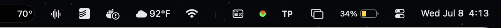
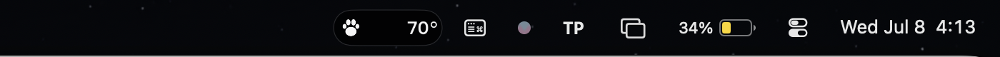
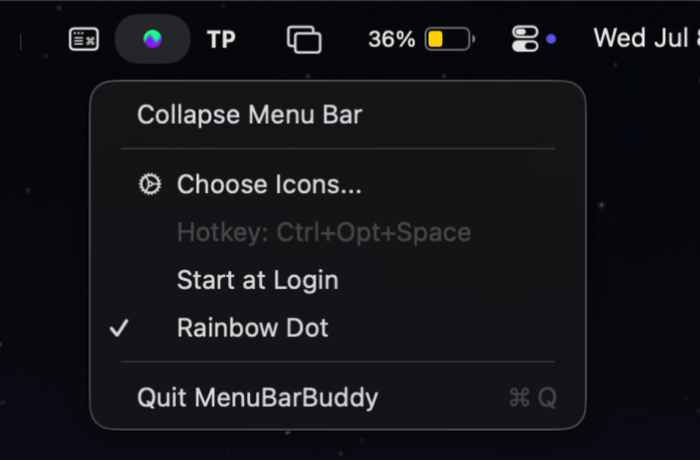

MenuBarBuddy hides the icons you do not need behind a single small dot. Click to collapse, click again to bring everything back. Fast, native, and hardened to keep working when macOS 26 Tahoe breaks the other ones.
macOS 14 and up · verified on macOS 26 Tahoe · tiny native download
This is a live demo, not a picture. In the real app the same toggle is on the global hotkey Ctrl Opt Space. By default the toggle is a small green dot, and you can turn on Rainbow Dot for the animated two-tone version.
How it works
MenuBarBuddy adds a toggle and a separator. Everything to the left of the separator hides on collapse. Everything to the right stays. You decide the line.
The separator marks the boundary. Cmd-drag any icon to sit between the separator and the toggle to keep it always visible.
One click collapses the clutter behind the separator. Click again, or press Ctrl+Opt+Space, to bring it all back.
Right-click for the menu. Turn on the two-tone rainbow dot, and set it to start at login. Done.
Features
Toggle from anywhere with Ctrl+Opt+Space. No mouse trip to the corner of the screen.
An optional two-tone dot: two hues a third of the wheel apart, blended along a wavy boundary that drifts as they phase through the spectrum. Vivid when active, softly grayed when idle.
Run the classic green dot or flip on the animated rainbow. The look is yours, right from the menu.
One toggle and MenuBarBuddy is quietly there after every reboot, using the official SMAppService API. Set it and forget it.
macOS 26 caps status item sizes and can orphan items after a crash. MenuBarBuddy shields every size write and checks for the failure roughly every 5 seconds, in both collapsed and expanded states. If it ever gets orphaned, it recreates its items in place, and can repair and relaunch itself as a last resort.
Move the separator and toggle anywhere with a Cmd-drag. A layout guard keeps the toggle on the safe side so it never hides itself.
Written in Swift and AppKit. No Electron, no background helper zoo. It sits quietly in your status bar and does one thing well.
No sign-in, no telemetry, no server. MenuBarBuddy runs entirely on your Mac and never phones home.
See it move
The demo clip is on its way. In the meantime, the live demo up top does the same thing, for real, right in your browser.
Before and after



How it stacks up
There are great free menu bar tidiers out there. The gap shows up the day a macOS update changes the rules under them.
| MenuBarBuddy | Typical paid app | Typical free app | |
|---|---|---|---|
| Price | $4.20 once | Around $20 | Free |
| Subscription | None | Sometimes | None |
| Hardened for macOS 26 Tahoe | Yes | Varies | Hit or miss |
| Self-healing watchdog | Yes | Rare | No |
| Global hotkey and rainbow dot | Yes | Some | Some |
| No cloud, no account | Yes | Varies | Usually |
Prices and capabilities of other apps change often. Check their current listings before you compare.
Pricing
No trial nag screens, no accounts, no monthly bill. One friendly price and every update is included.
Not happy? Email us within 30 days for a full refund. It is $4.20, nobody is fighting over it.
Questions
One dot, one click, one clean bar. And one honest price.
Get MenuBarBuddy for $4.20